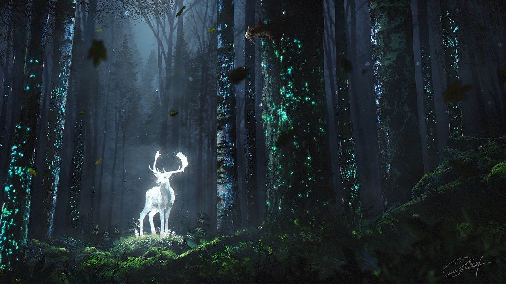

Things To Do
Hogwarts Castle Tour

Enter the heart of the Wizarding World and explore every shadow of Hogwarts Castle! Take a tour through the ever-changing, moving staircases to the beautiful and grand enchanted Great Hall. Wander through hidden places, discover secret magical rooms, and stand in awe at the castle's stunning architecture, from the library to the common area. Join interactive classes where you can learn to cast spells, brew potions, and dive into captivating tales of magical history. Each visit promises discoveries and surprises. Live out an adventure exploring Hogwarts.
Quidditch Experience

Take part in the adrenaline rush of a Quidditch match in a way only the Wizarding World can offer. Take to the skies on a broomstick and fly across the arena. Learn to pass, shoot, and dodge like a professional. If taking to the field isn't your speed, then sit and enjoy the thrill of the matches unfold before your eyes. As you chase the Quaffle, or watch the players hunt for the Golden Snitch, enjoy the flight above castle grounds. Quidditch offers an unforgettable adventure for those who like esports, speed, and fun in a way that's magical.
Magical Creatures Encounter
Drift into the enchanted realm of the serene Forbidden Forest. Visit the sanctuaries where the wondrous creatures of the wizarding world come alive. Encounter creatures like hippogriffs, dragons, and a host of other magical beasts, each with their own unique behaviors. Learn to properly care and interact with these extraordinary creatures through hands-on guided experiences and demonstrations. Forage through trees, listen to the songs of the forest, and explore hidden places where magic flourishes; all while exploring the heart of the forest. Every stop offers unforgettable moments with one of the most mysterious realms in the Wizarding World.